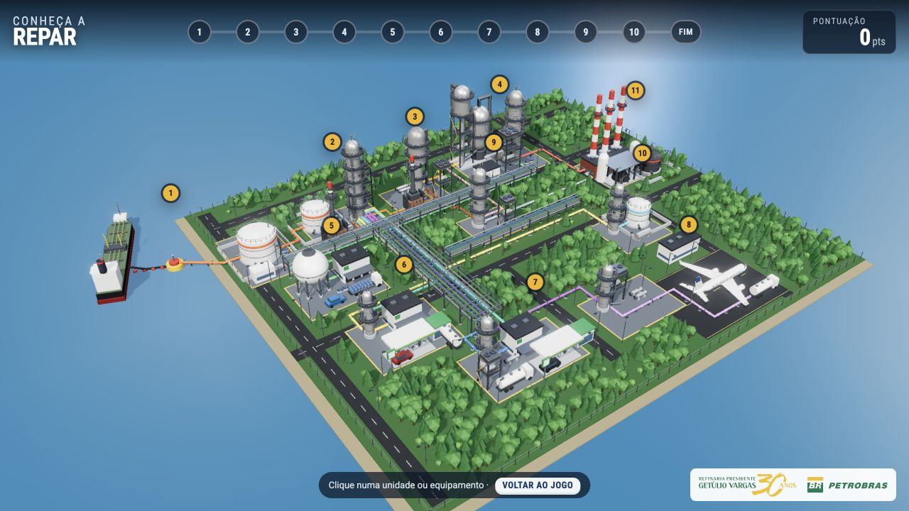

A guided visual journey
The legacy version presents the process through 2D illustrations, a sequence of stages and a character who introduces the refinery.
Petrobras · Interactive learning · 2D to 3D
Explore REPAR 3D brings two generations of the same project together: the original visual journey and an interactive 3D experience that makes the path of oil tangible.

The experience follows oil from its arrival at the terminal to the products of refining. Ten stages combine explanations, questions and visual storytelling.
The original project was created in Flash in 2007. Its legacy version preserves the illustrated approach, while the 3D version reimagines how people navigate and discover the refinery.
The evolution
The legacy version presents the process through 2D illustrations, a sequence of stages and a character who introduces the refinery.
The 3D version uses a Blender model, camera movement and illuminated pipes to reveal connections. Visitors can follow the guided journey or explore freely.
Before and after
Move the divider to compare the legacy interface with the 3D version.
 Before · LegacyAfter · 3D
Before · LegacyAfter · 3DDrag horizontally, tap the comparison or use the arrow keys when the slider is focused.
Try the experience
Open each version to experience the journey and its different ways of presenting the refinery.
Discover the illustrated journey through ten stages of refining.
Open legacy versionFollow the camera through the refinery or explore the 3D model freely.
Open 3D version